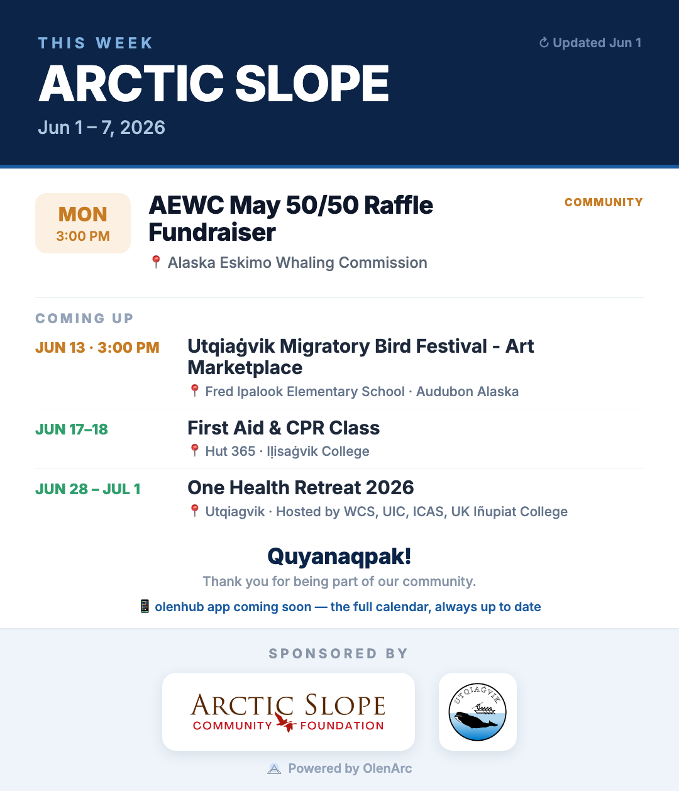
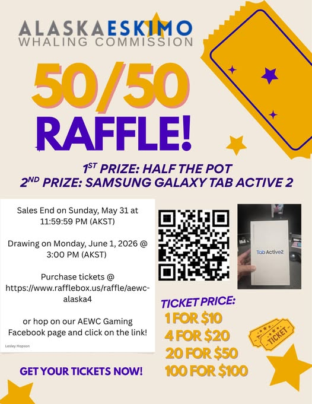

📣 This week's Facebook post — ready
This week = a 2-photo post (1 calendar + 1 event flyer) + 1 caption.
How it looks in the feed
Utqiaġvik Update
Just now · 🌐
People see a 2×2 grid (tiles get cropped). They tap to swipe through all 2 full-size. That's why the calendar is photo #1.
Save these 2 photos · in this order
1
The calendar (cover)
2
AEWC May 50/50 Raffle Fundraiser
📱 Long-press each → Save to Photos. Save all 2.
How to post
- Long-press each photo above → Save to Photos (all 2).
- Tap Copy caption.
- Open the Utqiaġvik Update Facebook group → Create post.
- Add the photos (calendar first), paste the caption, post. ✅